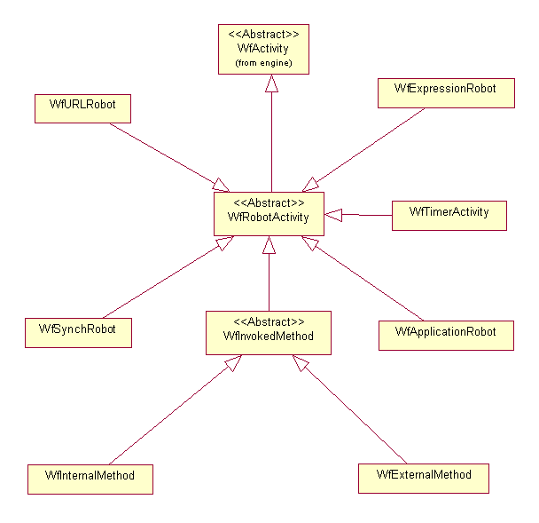

See: Description
| Class | Description |
|---|---|
| _WfSynchType | |
| WfSynchType |
Used specify which kind of synchronization is to be performed by the
synchronization robot.
|
| WfURLRobotConnection |
This class is the abstraction layer for our various
connection schemes between the method server's URLRobot and the target server. |
| WfURLRobotConnectionFactory |
This class is a factory whose sole purpose is to return
the proper WfURLRobotConnection class.
|
The workflow robots package is responsible for the execution of robot activities, that is, activities that are executed without human intervention. The WfInternalMethod class encapsulates a Windchill API and causes it to be invoked when the activity start event is fired.
WfSynchRobot allows a workflow to be synchronized based on events that are emitted by Windchill services or an arbitrary Java expression.
WfTimerActivity allows a workflow to be synchronized on time.
WfExpressionRobot allows an arbitrary Java expression to be executed by the workflow engine.
WfApplicationRobot allows a parameterized command line to be executed by the
workflow engine.
Note: WfExternalMethod is not currently used.

Workflow Robots
package diagram